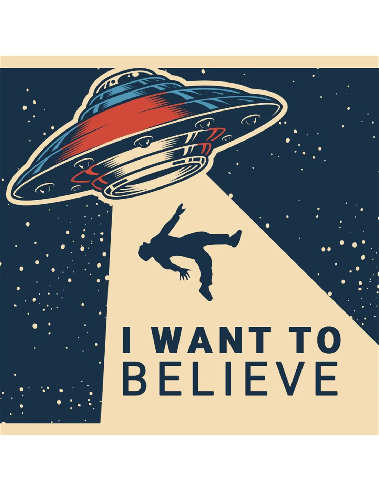

Índice
Negrita
Una palabra clave relativamente importante para mi
Italica o cursiva
Las tendencias más cool del vernano.
Parafraseando a Einstein Dios no juega a los dados
Benito le dijo a Manuel que era un campeón
Subrayado y tachado
Esto es un texto Subrayado
El hombre llegó a la luna en 19701969
Caracteres especiales
Espacios en blanco
El espacio en blanco se codifica como (NoBreakSPace)
Hola que tal
Hola que tal
Hola que tal
Hola que tal
Hola que tal
Listas
Lista numerada
- Lorem elit do et sunt cillum ipsum ad.
- Eu qui consectetur labore sint enim esse id irure.
- Minim exercitation nulla magna do esse magna et voluptate eiusmod aliquip in anim cupidatat labore.
- ...
Lista no numerada
- Incididunt voluptate non tempor adipisicing dolore sit irure nulla exercitation reprehenderit.
- Ipsum cupidatat tempor exercitation velit nom enim ullanco sit mollit.
- Qui nostrud commodo anim cupidatat aliqua.
Lista anidada
Ejemplo 1 - Protocolos de la capa de aplicación
- Transmisión de ficheros
- Correo electrónico
Ejemplo 2 - Índice
- La comunicación
- Conceptos
- Elementos de un sistema de comunicación
- Modos de transmisión
- Concepto de red.Ventajas
- Concepto de red
- Ventajas de las redes
- Topologías de red
- Topología en estrella
- Topología en bus
- Topología en anillo
- Topología en árbol(estrella jerarquica)
- Topología en malla
Ejemplo 3 - Mixto
- Mamíferos
- Pájaros
- Peces
Imagen centrada

Cita célebre
"Comentar el código es como limpiar el cuarto de baño; nadie quiere hacerlo, pero el resultado es siempre una experiencia más agradable para uno mismo y sus invitados"
-- Ryan Campbell